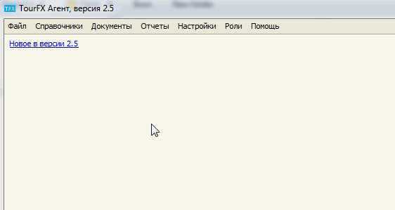

Резервное копирование базы данных
Однопользовательская версия
Каждый день программа автоматически создает резервную копию базы данных в виде zip-файла. Он
находится в директории <Папка программы>\data\backup (обычно C:\TourFX\data\backup). Zip-файлы имеют
наименования вида "agent_ггммдд_ччммсс.zip", где гг - год, мм - месяц, дд - день, чч - час, мм -
минуты, сс - секунды. Например, "agent_100428_100549.zip" соответствует файлу резервной копии
базы данных, сделанному 10 апреля 2010 года в 10 часов 5 минут 49 секунд.
Во избежании необратимой потери данных рекомендуется периодически (например, раз в неделю) копировать
последний файл из директории резервных копий на другой жесткий диск или флэш-карту.
Программа также позволяет создавать резервную копию базы данных в любой момент времени вручную. Для
этого выберите пункт "Сохранить базу данных" в меню "Файл" программы.
Дополнительно можно определить специальную папку, в которую будет копироваться резервная копия. Папка выбирается с
помощью формы "Резервное копирование" в меню Файл.
Рекомендуется в качестве папки для резервных копий использовать папку синхронизации
Dropbox, Google Drive
или Яндекс.Диск. Таким образом вы сможете защитить данные от потери в случаях
системных сбоев, действий вирусов или поломки компьютера.
Восстановление базы данных из резервной копии
Многопользовательская версия
В многопользовательской версии база данных хранится на сервере баз данных "Microsoft SQL Server Express Edition".
Резервное копирование может осуществляться штатными средствами сервера. См.
документацию по резервному копированию.
Базы данных программы: tourfx_agent, tourfx_agent_changelog и tourfx_agent_archive.
Вы также можете создать резервную копию базы данных и сохранить ее в определенную папку из программы TourFX.
Данная функция работает только на компьютере, на котором установлен
Microsoft SQL Server, и только для пользователей, имеющих роль Администратор или Директор.

Если указана папка для резервных копий, программа автоматически создает резервную копию базы данных через 10 минут
после запуска и затем каждую ночь (если программа остается запущенной).
Рекомендуется в качестве папки для резервных копий использовать папку синхронизации
Dropbox, Google Drive
или Яндекс.Диск. Таким образом вы сможете защитить данные от потери в случаях
системных сбоев, действий вирусов или поломки компьютера.
Остались вопросы? Напишите нам на e-mail